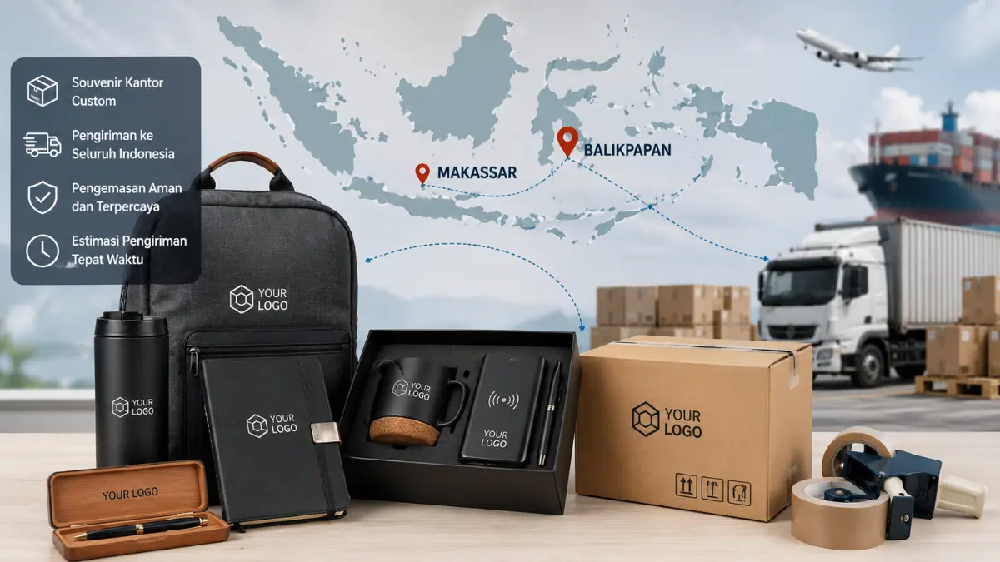
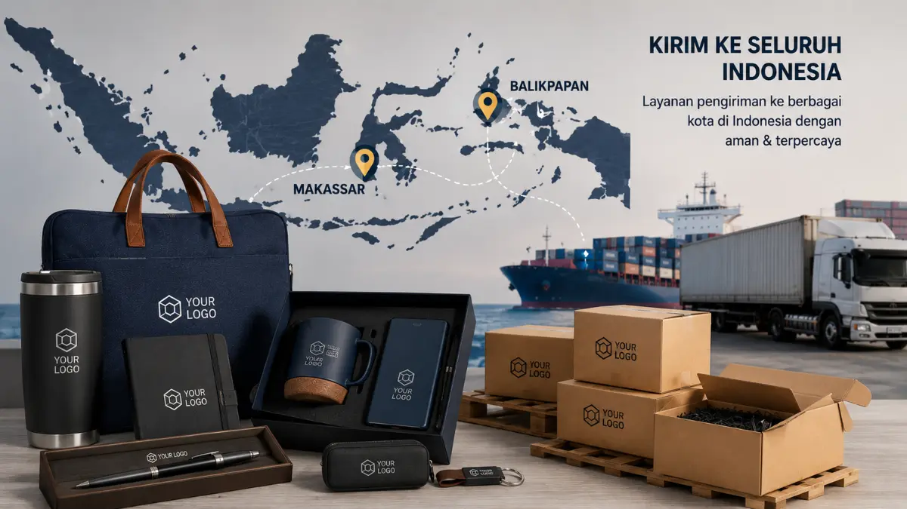

Souvenir Kantor Custom untuk Perusahaan Melayani Makassar, Balikpapan, hingga Seluruh Indonesia
 Anggun Tri Stya Ningrum (Tri)
3 Agustus 2026
6 Menit Baca
Anggun Tri Stya Ningrum (Tri)
3 Agustus 2026
6 Menit Baca

Souvenir kantor custom untuk perusahaan di Makassar, Balikpapan, dan seluruh Indonesia adalah layanan pemesanan merchandise berlogo yang mencakup proses produksi hingga pengiriman ke berbagai wilayah di luar Pulau Jawa. Perusahaan di luar Pulau Jawa umumnya membutuhkan waktu pengiriman lebih panjang dibandingkan wilayah Jawa. Perencanaan waktu pemesanan lebih awal sangat penting bagi perusahaan di wilayah timur Indonesia.
Souvenir kantor custom untuk perusahaan di Makassar, Balikpapan, dan seluruh Indonesia adalah layanan pemesanan merchandise berlogo yang mencakup proses produksi hingga pengiriman ke berbagai wilayah di luar Pulau Jawa. Layanan souvenir kantor custom skala nasional melayani perusahaan di berbagai kota, termasuk Makassar dan Balikpapan. Perusahaan di luar Pulau Jawa umumnya membutuhkan waktu pengiriman lebih panjang dibandingkan wilayah Jawa. Biaya logistik ke wilayah timur Indonesia dapat dipengaruhi oleh jarak, moda transportasi, dan volume pengiriman. Pemilihan vendor yang berpengalaman menangani pengiriman luar Jawa membantu mengurangi risiko keterlambatan. Perencanaan waktu pemesanan lebih awal sangat penting bagi perusahaan di wilayah timur Indonesia.
- Apa Itu Layanan Souvenir Kantor Custom Skala Nasional?
- Kenapa Perusahaan di Makassar dan Balikpapan Membutuhkan Souvenir Kantor Custom?
- Bagaimana Proses Pengiriman Souvenir Kantor Custom ke Luar Jawa?
- Apa Saja Pertimbangan Biaya Logistik untuk Wilayah Timur Indonesia?
- Bagaimana Memilih Vendor Souvenir Kantor Custom yang Melayani Seluruh Indonesia?
- Apa Saja Tips Merencanakan Jadwal Pemesanan Souvenir dari Luar Jawa?
- Kesimpulan
- FAQ
Apa Itu Layanan Souvenir Kantor Custom Skala Nasional?
Layanan souvenir kantor custom skala nasional adalah layanan pemesanan merchandise berlogo perusahaan yang mencakup proses desain, produksi, hingga pengiriman ke berbagai kota di Indonesia, tidak terbatas pada wilayah Pulau Jawa saja. Layanan ini umumnya disediakan oleh vendor yang telah memiliki pengalaman menangani pengiriman ke berbagai daerah, termasuk wilayah Indonesia bagian timur seperti Makassar dan Balikpapan.
Cakupan layanan biasanya meliputi konsultasi produk, pembuatan desain logo pada souvenir, proses produksi, pengemasan, hingga koordinasi pengiriman menggunakan jasa ekspedisi darat, laut, maupun udara sesuai kebutuhan dan lokasi tujuan perusahaan.
Kenapa Perusahaan di Makassar dan Balikpapan Membutuhkan Souvenir Kantor Custom?
Perusahaan di Makassar dan Balikpapan membutuhkan souvenir kantor custom untuk kebutuhan branding, apresiasi karyawan, dan acara korporat, sama seperti perusahaan di kota besar lain seperti Jakarta atau Surabaya.
Sebagai kota dengan aktivitas bisnis dan industri yang terus berkembang, Makassar dan Balikpapan memiliki banyak perusahaan dari berbagai sektor, mulai dari pertambangan, energi, perbankan, hingga usaha rintisan lokal, yang sama-sama memerlukan merchandise berlogo untuk mendukung strategi pemasaran dan hubungan dengan klien maupun mitra bisnis.
Bagaimana Proses Pengiriman Souvenir Kantor Custom ke Luar Jawa?
Proses pengiriman souvenir kantor custom ke luar Jawa umumnya melibatkan koordinasi antara vendor souvenir dengan jasa ekspedisi yang memiliki jangkauan hingga wilayah timur Indonesia.
Setelah proses produksi selesai, souvenir biasanya dikemas dengan perlindungan tambahan seperti bubble wrap atau kardus berlapis untuk mengurangi risiko kerusakan selama perjalanan jarak jauh. Pengiriman ke kota seperti Makassar dan Balikpapan umumnya menggunakan moda transportasi laut atau udara, tergantung pada volume barang dan urgensi waktu penerimaan yang dibutuhkan perusahaan.
Perusahaan yang berlokasi di luar Jawa disarankan mengonfirmasi estimasi waktu pengiriman secara langsung kepada vendor, mengingat durasi pengiriman ke wilayah timur Indonesia umumnya lebih panjang dibandingkan pengiriman antar kota di Pulau Jawa, terutama jika menggunakan moda transportasi laut.

Apa Saja Pertimbangan Biaya Logistik untuk Wilayah Timur Indonesia?
Biaya logistik untuk wilayah timur Indonesia umumnya dipengaruhi oleh jarak tempuh, moda transportasi yang digunakan, serta volume dan berat total souvenir yang dikirim.
Jarak Tempuh
Semakin jauh tujuan, semakin tinggi biayaModa Transportasi
Udara lebih cepat, laut lebih ekonomisVolume & Berat
Semakin besar, semakin tinggi biayaPengiriman menggunakan moda transportasi udara umumnya menawarkan waktu tempuh lebih cepat namun dengan biaya yang cenderung lebih tinggi dibandingkan moda transportasi laut, yang lebih ekonomis namun membutuhkan waktu pengiriman lebih panjang. Perusahaan dengan kebutuhan mendesak, misalnya untuk acara korporat dalam waktu dekat, umumnya perlu mempertimbangkan tambahan biaya pengiriman ekspres agar souvenir tiba tepat waktu.
Selain moda transportasi, volume dan berat souvenir turut memengaruhi biaya logistik secara keseluruhan, sehingga perusahaan disarankan mengonsolidasikan pemesanan dalam jumlah yang efisien untuk mengoptimalkan biaya pengiriman per unit produk.
Bagaimana Memilih Vendor Souvenir Kantor Custom yang Melayani Seluruh Indonesia?
Memilih vendor souvenir kantor custom yang melayani seluruh Indonesia sebaiknya mempertimbangkan pengalaman vendor dalam menangani pengiriman ke luar Pulau Jawa, termasuk wilayah timur seperti Makassar dan Balikpapan.
Pengalaman Ekspedisi
Pastikan vendor memiliki jaringan kerja sama dengan jasa ekspedisi terpercaya yang menjangkau seluruh Indonesia.
Estimasi Waktu Jelas
Vendor harus mampu memberikan estimasi waktu produksi dan pengiriman yang jelas sejak awal.
Kualitas Pengemasan
Metode pengemasan yang baik untuk melindungi produk selama perjalanan jarak jauh.
Komunikasi Responsif
Vendor yang responsif membantu memantau progres produksi dan pengiriman.
Perusahaan disarankan memeriksa apakah vendor memiliki jaringan kerja sama dengan jasa ekspedisi yang terpercaya dan memiliki jangkauan luas hingga ke berbagai provinsi di Indonesia. Selain itu, penting untuk memastikan vendor mampu memberikan estimasi waktu produksi dan pengiriman yang jelas sejak awal, agar perusahaan dapat merencanakan jadwal acara atau distribusi souvenir dengan lebih akurat.
Faktor lain yang perlu diperhatikan adalah kemampuan vendor dalam menjaga kualitas produk meskipun dikirim jarak jauh, termasuk metode pengemasan yang digunakan untuk melindungi souvenir dari risiko kerusakan selama perjalanan menuju kota tujuan di luar Pulau Jawa.
Apa Saja Tips Merencanakan Jadwal Pemesanan Souvenir dari Luar Jawa?
Perusahaan di luar Pulau Jawa disarankan merencanakan pemesanan souvenir kantor custom jauh lebih awal dibandingkan perusahaan yang berlokasi di sekitar pusat produksi, mengingat tambahan waktu yang dibutuhkan untuk proses pengiriman.
Buffer Waktu
Tambahkan waktu cadangan untuk antisipasi keterlambatanKoordinasi Rutin
Pantau progres produksi dan jadwal pengirimanPemesanan Efisien
Gabungkan pesanan untuk beberapa acaraSebagai langkah antisipasi, perusahaan dapat menetapkan tenggat pemesanan dengan buffer waktu tambahan, terutama jika souvenir dibutuhkan untuk acara dengan tanggal yang sudah ditentukan sejak awal, seperti seminar tahunan atau perayaan hari jadi perusahaan. Koordinasi rutin dengan vendor terkait progres produksi dan jadwal pengiriman juga membantu perusahaan memantau apakah souvenir akan tiba sesuai target waktu yang direncanakan.
Perusahaan juga dapat mempertimbangkan pemesanan dalam jumlah yang lebih besar sekaligus untuk kebutuhan beberapa bulan ke depan, guna mengurangi frekuensi pengiriman jarak jauh sekaligus mengoptimalkan efisiensi biaya logistik secara keseluruhan.
Butuh Souvenir Kantor Custom untuk Perusahaan di Luar Jawa?
Konsultasikan kebutuhan souvenir kantor custom untuk perusahaan di Makassar, Balikpapan, atau seluruh Indonesia dengan tim kami.
Konsultasi SekarangKesimpulan
Perusahaan di Makassar, Balikpapan, dan berbagai kota lain di Indonesia tetap dapat memesan souvenir kantor custom dengan kualitas yang sama seperti perusahaan di Pulau Jawa, selama memperhatikan aspek waktu dan biaya pengiriman sejak awal perencanaan. Memilih vendor berpengalaman dalam pengiriman luar Jawa, memesan lebih awal, serta mengonfirmasi estimasi waktu produksi dan pengiriman menjadi langkah penting agar souvenir kantor custom tiba tepat waktu dan sesuai kebutuhan acara perusahaan.
FAQ Seputar Souvenir Kantor Custom untuk Luar Jawa